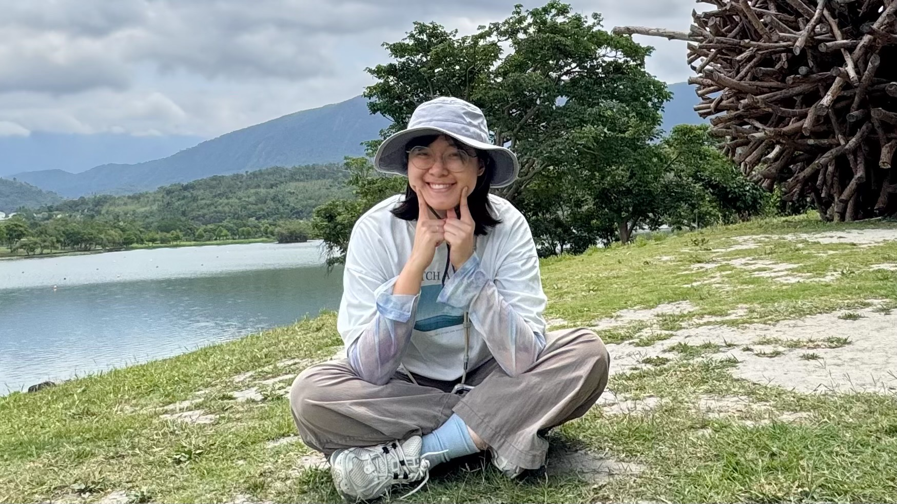

向右滑，繼續閱讀 1 / 5
根據你的需求，工作提供兩大應用方向
適合個人、伴侶、或是與朋友同行。 探索的核心從不只是為了解決衝突，而是全面的「看見自己，進而理解他人」。 來到這裡，陌生人將成為妳最乾淨的鏡子，照出妳在全新關係裡最直觀的特質原型； 而伴侶與朋友則能映照出更深、更多角度的妳。 找到天性，將這些特質巧妙轉化為關係中的「優勢互補」，建立更具支持感的親密連結。
最適合面臨職涯轉折、斜槓探索或職場迷惘者。不流於冷冰冰的性向測驗，我們從你自小的「興趣」切入，尋找你與生俱來的優勢。看見你在團體或專案中獨特的影響力類型，為你勾勒出符合本質的職涯路徑與生活藍圖。
工作坊現場一瞥
心理學取向的特質卡牌，搭配引導師帶領的鏡像對話——不是對照說明書，而是一場被看見的體驗。
工作坊採用由諮商專業背景發展的特質卡牌系統。卡牌架構固定，從興趣切入、追問為什麼喜歡，再收斂出你的個性特質。
每張特質都是一體兩面：天賦與失衡狀態並存。現場由引導師帶領解讀與對話，幫助你看見那些習以為常、卻從未好好認領的自己。
每期工作坊會依主題調整參考書目，皆以心理學、自我覺察與天賦探索為主。以下是近期常搭配的讀物：
《高敏感是種天賦》
認識高敏感特質，理解感官與情緒如何影響日常
《跨域致勝》
從多元興趣與能力交會處，看見獨特優勢與職涯可能
更多心理學讀物
依當期主題補充，現場與引導師討論延伸
暫時卸下社會、家庭、職場的所有標籤與框架。我們不聊工作與責任，而是從最純粹的「興趣與熱愛」切入，找出你的原廠設定。
核心互動體驗。透過現場夥伴或同伴客觀、專注且溫馨的回饋，找出那些被你習以為常、實際上極具天賦的力量。
理性框架對話。引導師將運用嚴謹的系統框架和卡牌，分析特質的呈現幅度，和各特質的一體兩面。幫助你學會如何在生活中，使用自己的天賦。
在安定溫馨的氛圍中收尾。我們會將探索獲得的卡牌特質，收斂成一個個微小行動，帶著滿滿的力量回歸日常生活。

張老師培訓二階
累積系統化引導框架
心理學自我覺察
諮商學習與實踐超過 7 年
10+ 場工作坊
舉辦與現場引導經驗
清華大學設計思考工作坊團隊
從真實需求出發，轉化解決方法
白天我是軟體工程師，本質上卻是一個高敏感的人。下班後的生活很豐富——我善於體驗、感受、也願意為自己找樂趣。
透過認識自己的特質，我學會在生活中用樂趣與創意活出自己，而不是被「應該怎樣」綁住。這份工作坊，就是我把這段路程整理出來、想陪你一起走的一段路。
「我和先生一起來參加。原本總覺得他做事太細節、很囉唆，透過卡牌對照才明白：那是他原廠設定中體貼人的『細膩偵測器』！我們終於不再用爭吵去消耗彼此，而是學會欣賞對方的特質。」
「職涯茫然時參加了這場工作坊。透過卡牌想起了好多興趣，進而找回了那個閃閃發光的自己。原來好多能力，是我過去從沒想過的。後續的行動規劃也超有效，微小、易執行，但很有效，我的生活真的快樂了很多。」
2.5 ~ 3 小時深度探索體驗。
依據主題軌道（關係/職涯）調整互動重點。
4 ~ 8 人精緻小班或專屬包班。
非常適合朋友聚會、夫妻結伴同行或團隊凝聚。
高隱私空間。
可由主辦方安排，亦可由引導師協助代尋溫馨、靜謐且專屬的心靈包廂。